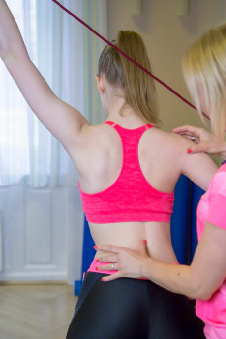
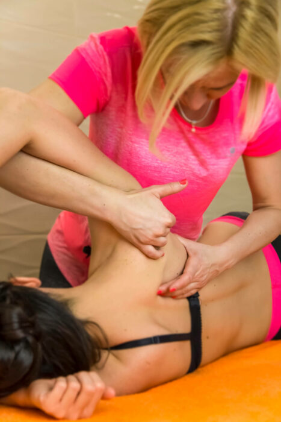
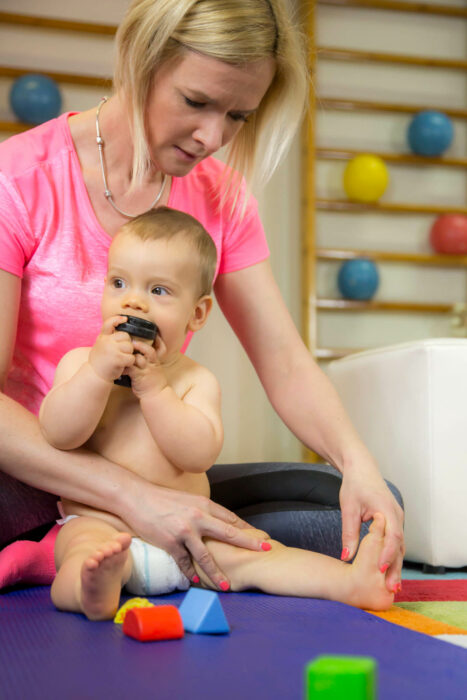
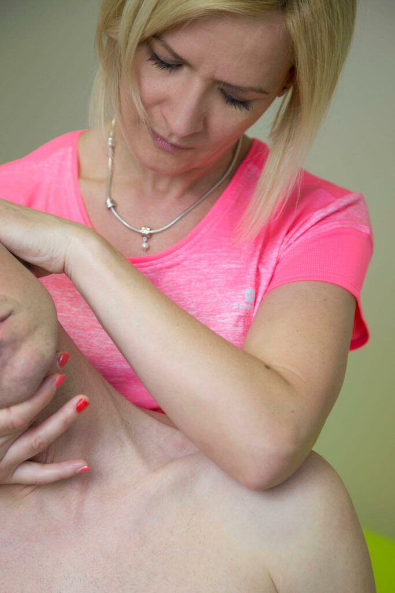

GYÓGYTORNÁSZ
Prekopecz-Farkas Andrea
Gyógytornász – Fizioterapeuta, DSGM Szakgyógytornász
SZAKMAI ÖNÉLETRAJZ
Egy közeli családtag baleseti sérülése indított el a gyógytornász pályán. A kézsebészeti műtétet követően láttam, hogy az orvosi beavatkozás után a gyógytorna mennyire fontos szerepet játszik a sérült kéz „újratanításában”. Ekkor 13 évesen határoztam el, hogy én is gyógytornász leszek.
A Pécsi Orvostudományi Egyetem Főiskolai Karának Gyógytornász Szakán végeztem 1997-ben. Pályám kezdetén több mint két évet dolgoztam a győri Petz Aladár Megyei Oktatókórház neurológiai és ortopédiai osztályán gyógytornászként. A kórházban lehetőségem nyílt a fenti két szakterületen gyakorlatot szerezni és ez megalapozta / meghatározta a pályám irányát is a későbbiekben…
Pályám meghatározó időszaka volt a győri Erzsébet Ligeti Óvoda speciális mozgássérült csoportjában gyógytornászként eltöltött időszak is, szeretek gyerekekkel foglalkozni és mindig fantasztikus érzéssel tölt el, ha a kicsiken tudok segíteni a szakmámnak köszönhetően.
Ez a motiváció vezetett akkor is, amikor elhatároztam, hogy felvételizek a Dévény Alapítvány DSGM Szakgyógytornász képzésére. A módszer elsajátítása egy új megközelítéssel gazdagította tudásomat, gyakorlati ismereteimet és alkalmazása folyamatos sikerélményt biztosít a babák (csecsemők) gyógyítása és fejlesztése területén.
2000-ben indítottam el gyógytorna magánpraxisomat egyéni vállalkozóként, melyből folyamatosan merítve és építkezve 2010-ben megnyitotta kapuit a DEVELOMED Gyógytorna Rendelő, mely máig családi kézben van.
Fő érdeklődési területeim a gyermek neurológiai és ortopédiai kórképek, ill. a felnőtt kori degeneratív gerincproblémák. 1998-óta foglalkozom tartáskorrekcióval és gerincferdüléssel (scoliosis) küzdő páciensekkel.
Folyamatosan képzem magam, hiszen a gyógytorna módszertana, eszköztára, a páciensek igénye és elvárása folyamatosan változik, amely mindig egy újabb kihívást jelent számomra. Rendelésemre a gyermekeket és a felnőtteket egyaránt várom szeretettel.





SZAKTERÜLETEK
Munkám során kezelt
leggyakoribb kórképek
- Gerinc panaszok, scoliosis (gerincferdülés)
- Scheuermann betegség
- Lumbágo
- Hanyag tartás
- Csípőficam
- Nyak-, hát-, térd-, csípő-, váll- és egyéb ízületi fájdalmak
- Patella luxáció (térdkalács ficama)
- Ilizarov készülékkel történő lábhosszabbítás vagy tengelykorrekció utáni kezelés
- Magzati életben felvett tartási rendellenességek (torticollis – ferde nyaktartás)
- Dongaláb
- Lábdeformitások
- Gyermekkori agyi eredetű mozgászavarok (infantilis cerebral paresis – ICP)
- Mozgásfejlődésben megkésett gyermekek
- Születéskori oxigénhiány okozta kórképek
MÓDSZEREK
Kiemelt technikáim
- DSGM (Dévény módszer)
- Schroth módszer
- Manuál Terápia
- McKenzie módszer
- Tape technika / Kinezio Tape
TANULMÁNYOK
Végzettségeim és
továbbképzéseim
Végzettségeim
- 1993- 1997 Gyógytornász Diploma, Pécsi Orvostudományi Egyetem Főiskolai Kar
- 2012-2014 DSGM – Szakgyógytornász (Dévény Alapítvány)
Továbbképzések
- Schroth módszer
- Modern Scoliosis Terápia
- 3D Scoliosis Terápia
- McKenzie
- Manuálterápia (Barvicsenko)
- Core-Stabilizáció
- Mulligan Manuál Terápia
- Terrier-féle izületi és lágyrészmobilizáció
- Kinematic Taping (Tape technika)
- Neurodinamika
- Rehabilitációs Pilates
- Pilates (Talajmunka 1., 2., 3. , Személyi edzés, Reformer 1., Reformer 2.)